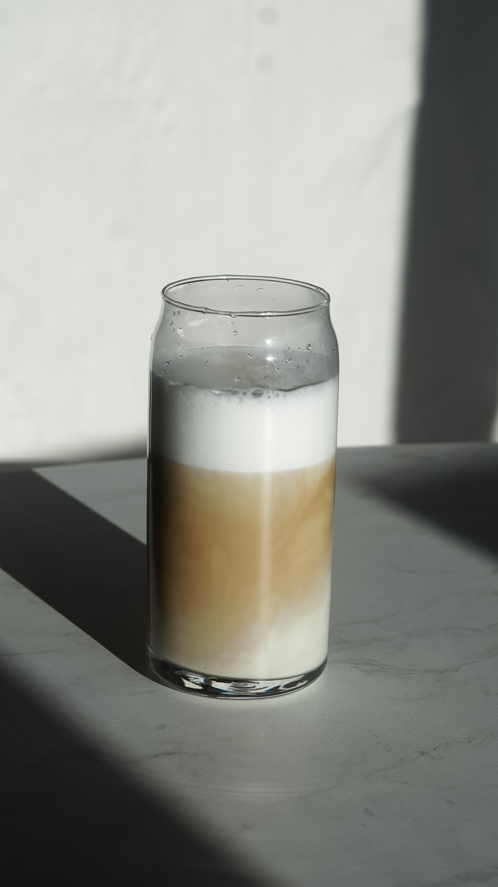

Latte

Latte to niezwykle kremowy i aromatyczny napój kawowy, który łączy
w sobie intensywne espresso z dużą ilością jedwabistego mleka. To
idealne połączenie zapewnia bogaty, łagodny smak z delikatną nutą
kawy, która rozpieszcza Twoje podniebienie. Możesz także dodać
ulubiony syrop, aby nadać napojowi dodatkowy smakowy zastrzyk.